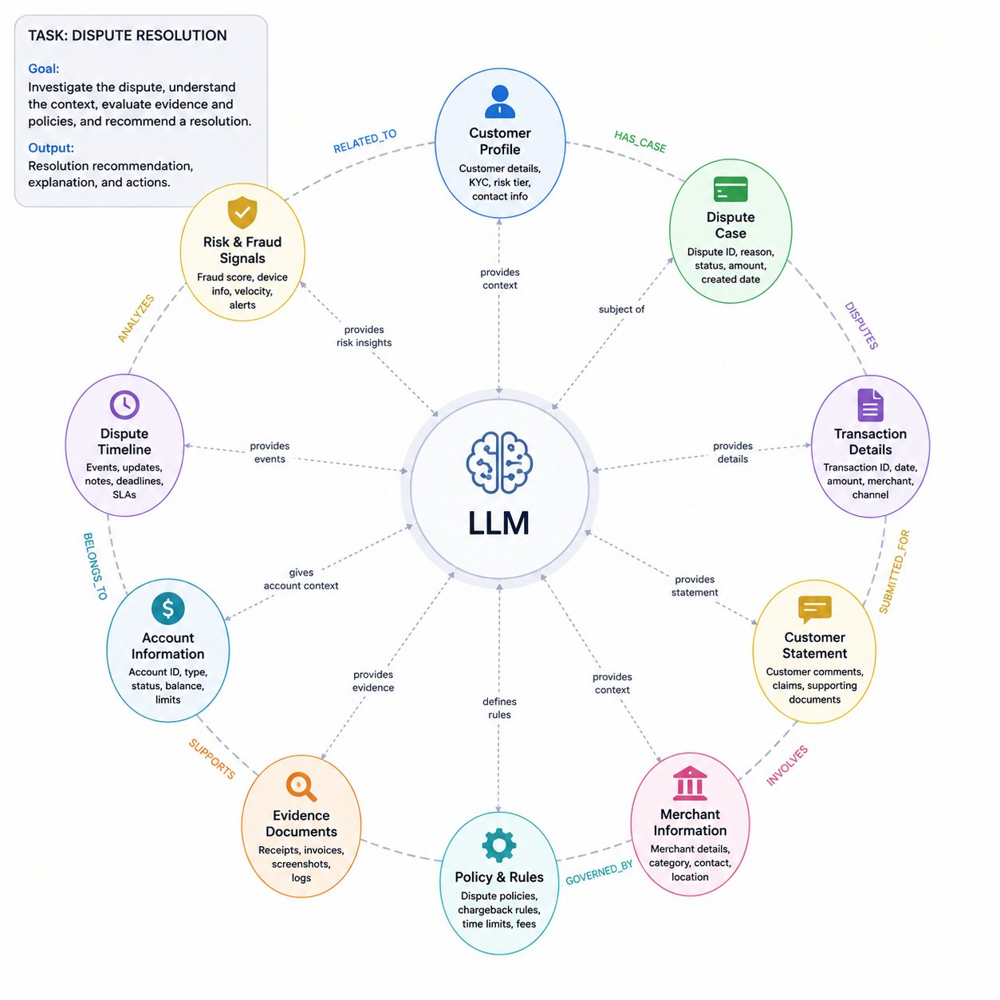

Operational State vs. Retrieved Information

Most current agent systems treat context primarily as conversation history, retrieved documents, or vector similarity results. This approach works reasonably well for conversational tasks. Operational systems require a fundamentally different type of context management.
In real environments, decisions depend not only on retrieved information, but also on entity relationships, organizational structure, temporal events, ownership chains, previous decisions, active constraints, and continuously evolving operational state.[1]
A customer is not just a document. A company is not just a text chunk. A regulatory event is not simply another retrieval result.
In practice, the system must continuously maintain and update structures such as entities, relationships, temporal event chains, policy bindings, and execution history. This is one of the reasons why graph-based approaches are becoming increasingly important in agent systems.
The Architectural Gap

Consider a dispute resolution task handled by an LLM-driven agent system.[2] The LLM does not operate on isolated prompts alone. Instead, it continuously interacts with a graph-structured operational context surrounding the task.
Entities such as the customer profile, disputed transaction, merchant information, fraud signals, policy rules, account state, evidence documents, and dispute timeline are all represented as connected nodes. The relationships between these nodes encode contextual dependencies, ownership relations, policy bindings, temporal event chains, and operational constraints.
During execution, the LLM navigates this graph to retrieve not only information, but also the evolving state of the dispute itself. In this sense, the graph becomes more than a retrieval layer — it acts as the runtime memory, operational state representation, and execution context of the entire decision system.[3]
A graph is not only useful for retrieval. It provides a runtime representation of operational state — reasoning over connected entities, evolving relationships, temporal dependencies, and contextual propagation paths. The graph stops being a storage layer and becomes contextual memory, operational state representation, and execution context for decision systems.[4]